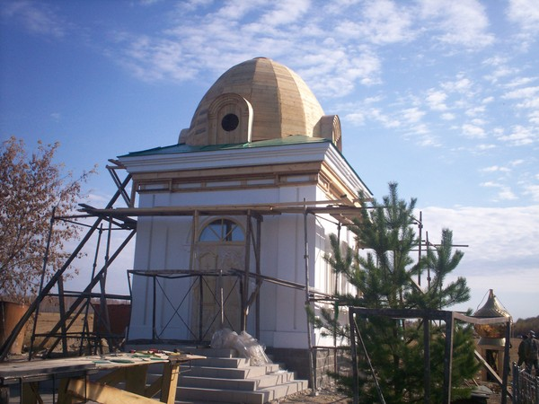
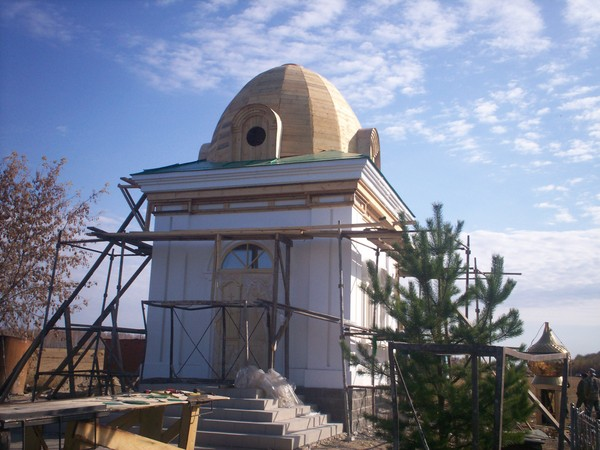

Posted by admin | Posted in Новости | Posted on 12-12-2010
Метки: строительство, часовня

Кладбищенская часовня в честь Святых Равноапостольных Константина и Елены с. Розовка
Read the rest of this entry »

Кладбищенская часовня в честь Святых Равноапостольных Константина и Елены с. Розовка
Read the rest of this entry »
Строительство храма в 2010 г.
Строительство храма в 2009 г.
Строительство храма в 2007-2008 гг.